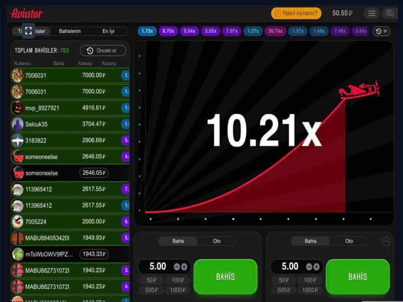
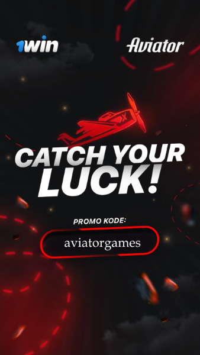

The Aviator - Gerçek para ile nasıl kazanılır
Büyüklerin peşinden koşarsan, küçüğü kaybedersin. Karlı bir Aviator oyunu için temel taktikleri bu şekilde tanımlayacağız. Başarısız bir oyun ve depozitonun tamamen boşaltılması ilkesi, yalnızca açgözlülüğünüz ve dayanıklılık eksikliğiniz üzerine kuruludur, ancak oyuna tamamen farklı bir yaklaşım öneriyoruz.
Bu nedenle, ilk adım, bahislerin boyutuna ve türüne karar vermektir. Bildiğiniz gibi, minimum bahis 3 Türk Lirası ve maksimum eşzamanlı bahis sayısı ikidir. Gerçek şu ki, bir ve iki eşzamanlı bahis için Aviator oynama stratejisi farklıdır, bu yüzden her birini ayrı ayrı ele alacağız.
Tek bahis için Aviator stratejisi
Tek bahisli oyun, yeni başlayanlar için en uygun çözümdür. Dikkatiniz dağılmayacaktır, bu da Aviator'da para kazanma sürecini dikkatlice izlemenizi sağlayacaktır.
İlk adım, başlayacağınız depozito bakiyesini belirlemektir. Tavsiyemiz, 1win online casino hesabınızda 200 bahis (en az 100) için yeterli paranızın olması gerektiğidir. Yani, hesabınızda 500 Türk Lirası varsa, 5 Türk Lirası ile bahis oynamanızı öneririz. Hesapta 10.000 Türk Lirası varsa, zaten 50-100 Türk Lirası arasında bahis oynayabilirsiniz.
Aviator'da bir tur için bahsin boyutunu belirledikten sonra, taktikleri güvenle üç türe ayrılabilecek bir stratejiye karar vermemiz gerekiyor.
Bu strateji size kısa sürede büyük bir jackpot kazandırmayacak, ancak oyunda kendinizi rahat hissetmenizi, en az kayıp yaşamanızı ve paranızı kaybetmemenizi sağlayacaktır. Taktiklerin özü oyundaki küçük oranlardır, yani her turda ön belleğimizin x 1.20-1.21 oranları üzerinde olması gerekir (otomatik seçim ve otomatik düzenleme seçeneklerini etkinleştirebilirsiniz). Bu, kaybedilen tur sayısını en aza indirmenize ve sistematik olarak bakiyenizi oluşturmanıza olanak tanır. Bakiye büyüdükten sonra, daha yüksek oranlara geçebilirsiniz. Böylece Aviator'da kazanç oranı artar.

1win online casino hesaplarında para sıkıntısı olmayan oyuncular için bu stratejiyi seçmenizi öneririz. Aviator'da bu taktiği kullanırken x2-x3 oranlarında oynuyoruz. 2-3 oranlı sonuçların olasılığı% 40-42'dir. Ancak bazen, kendi gücünüzden emin olduğunuzda ve uzun süredir büyük bir oran olmadığından emin olduğunuzda, şans payı ile sadece artıda kalmanıza değil, aynı zamanda depozitoyu da artırmanıza izin verecek büyük katsayılara sallayarak risk alabilirsiniz..
Bu gerçekten şanslı olanlar için bir stratejidir! Oranlar 100+, ortalama olarak bir buçuk saatte bir düşer. Bu nedenle, x100 veya daha fazla çarpma ile son sonucun ne zaman olduğuna bakarız, bir saat atlar ve aktif olarak bahis yapmaya başlarız. İyi şanslar!

İki eşzamanlı bahis için gerçek parayla Aviator oynama stratejisi
Bu taktik, bir bahis oynamaktan çok farklı değildir, ancak daha fazla dikkat gerektirir. Orta derecede riskli bir oyun optimal olarak kabul edilir. İlk bahis için otomatik bahis ve otomatik para çekmeyi x1.2 çarpımında seçmenizi ve ikincisi için yukarıda tek bahisli oyun için açıklanan orta risk stratejisine göre oynamanızı öneririz.
İki parçalı bir oyunda risk almak istiyorsanız, bir bahisle x40'ı ve ikinciyle x100'ü çarpmayı bırakmanızı öneririz. Böylece tüm bakiyeyi tek seferde harcamaktan kurtulup devasa oranlar bekleyebileceksiniz.

Çekim
Açıklanan strateji ve taktiklerin hiçbiri başarı için her derde deva değildir. Kendinize ait bir şey bulmakta, risk almakta ve kazanmakta her zaman özgürsünüz. Aviator 1win oyununda para kazanmak için kendi başarılı planınızı bulmayı başardıysanız, bunu web sitemizdeki özel İncelemeler bölümünde paylaşmaktan çekinmeyin.
Aviator oynayın ve kazanın!
